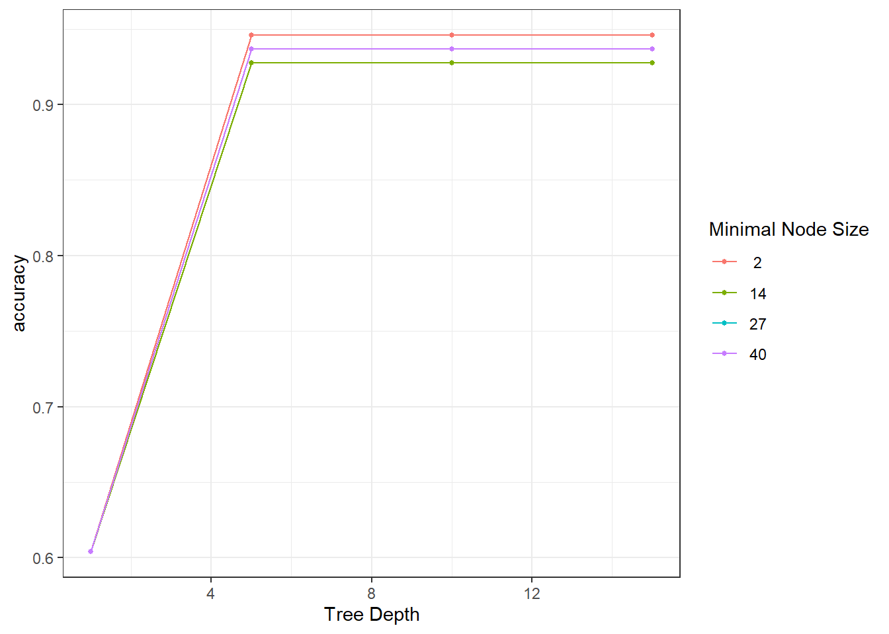
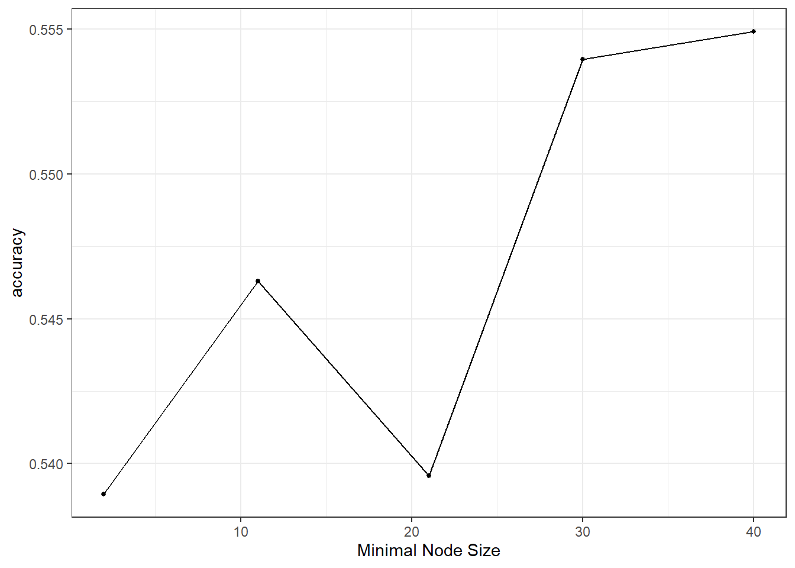
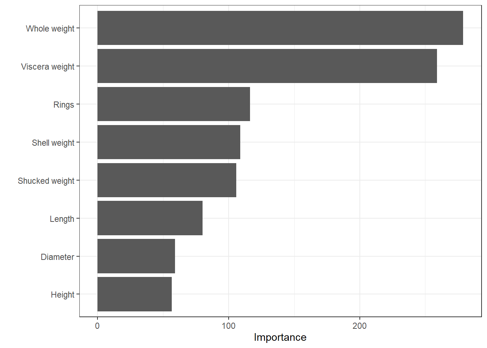
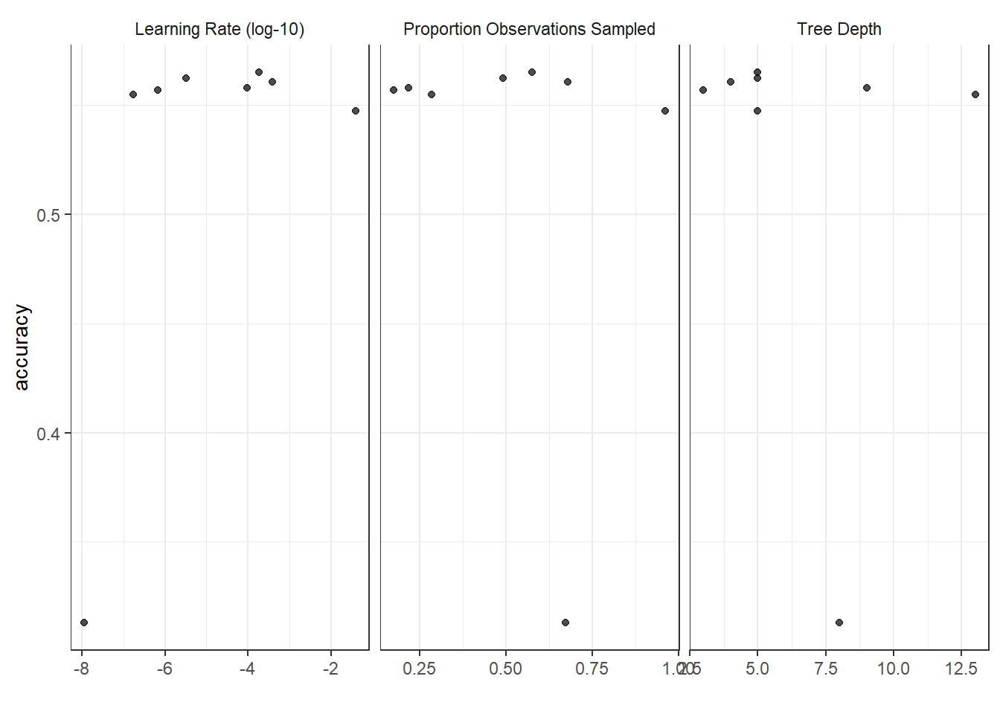
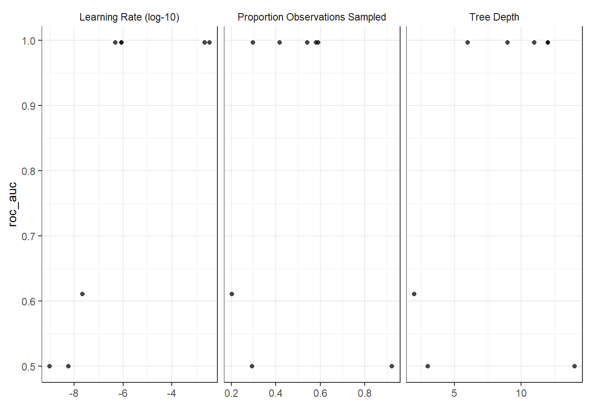

6 Random forrest and boosting
In this lecture we will continue where we left off in the previous lecture by considering the two methods Random forest and Boosted trees. Both bagging and boosting are general methods one can use for many predictive models and trees is first and foremost a convenient example of such procedures. This lecture is highly inspired by the data camp course Machine learning with three based models in R (see link at the buttom). For this lecture we have not made a video.
Before we go into the new models, we will have a quick look at how one can automatically tune hyperparameters with the tidymodels R package.
6.1 Hyperparameter tuning
All the models we have considered so far have hyperparameters one can tune - meaning finding the optimial set of hyperparameters. We have sticked to using standard values, but one can also use the tune (Kuhn 2021) package which is included in the tidymodels package. We will simply show you how it is done, but in principle you set up a set of candidate hyperparameters for the procedure to consider and then it fits set of model candidates and selects the best one.
For this example we have already loaded the iris data and set up the test and training. We set up the model specification setting the hyperparameters min_n (minimum number of data points in a node for the node to be split further) and tree_depth (maximimum depth of the tree) to tune() indicating to the procedure that these will be tuned.
tree_spec <- decision_tree(min_n = tune(), # to be tuned
tree_depth = tune()) %>% # to be tuned
set_engine("rpart") %>%
set_mode("classification")There are several ways of setting up the grid of model candidates, but we will consider the simplest here; namely the grid_regular. This allows you to simply specify how many grid points you want for each parameter, and it creates an equidistant grid. We use 4 for each, giving a \(4\times 4\) grid.
tree_grid <- grid_regular(parameters(tree_spec),
levels = 4)
tree_grid## # A tibble: 16 x 2
## tree_depth min_n
## <int> <int>
## 1 1 2
## 2 5 2
## 3 10 2
## 4 15 2
## 5 1 14
## 6 5 14
## 7 10 14
## 8 15 14
## 9 1 27
## 10 5 27
## 11 10 27
## 12 15 27
## 13 1 40
## 14 5 40
## 15 10 40
## 16 15 40Before we can start tuning, we need to set up the cross validation folds. We use 5 partitions for the cross validation.
folds <- vfold_cv(df_train, v = 5)Then we are ready to set up the tuning using the tune_grid function. It fits the model using each of the model candiates in the tuning grid and evaluates the model using cross validation for out-of-sample performance with a user-specified metric.
tune_results <- tune_grid(
tree_spec,
Species ~ .,
resamples = folds,
grid = tree_grid,
metrics = metric_set(accuracy)
)We can visualize the tuning using the autoplot function:
autoplot(tune_results)
Selecting the best model is done in a few steps. First we extract the best model setup and create a new (final) model specification.
# Best hyperparameters:
final_params <- select_best(tune_results)
final_params## # A tibble: 1 x 3
## tree_depth min_n .config
## <int> <int> <chr>
## 1 5 2 Preprocessor1_Model02# Best model spec:
best_spec <- finalize_model(tree_spec,
final_params)
best_spec## Decision Tree Model Specification (classification)
##
## Main Arguments:
## tree_depth = 5
## min_n = 2
##
## Computational engine: rpartIt seems the best model (among our candidates) has tree_depth of 5 and min_n of 2.
6.2 Random Forest
Random forest is really a bagged tree with additional randomness added to it. That is, it is an ensemble method with trained trees on bootstrap samples. The additional randomness stems from using a random sub-sample of the available predictors in each tree in the ensemble. It may be non-intuitive that not using all predictors in each tree would provide the best prediction, but it is beneficial for the ensemble that the individual trees are less correlated.
They are
- Well-suited for high dimensional data
- Easy to use
- Implemented in several R packages (ranger, randomForest)
In tidymodels, the function rand_forest() provides a user interface to these implementations. The hyperparameters are
- mtry: predictors seen at each node
- trees:Number of trees in your forest
- min_n: smallest node size allowed
Increasing the number of trees can be one way of improving the model performance.
There are also different options for algorithms to be used for the node split. If you use the ranger implementation the options are impurity or permutation. This is set in the set_engine call. We will not go into the details here, but use the impurity option as default.
Example
In this lecture, we will move away from the Iris data set and consider the problem of predicting the sex of abalones. The data is produced by Nash et al. (1994) and downloaded here. Here you will also find the following explanation of the columns of the data: Name / Data Type / Measurement Unit / Description
- Sex / nominal / – / M, F, and I (infant)
- Length / continuous / mm / Longest shell measurement
- Diameter / continuous / mm / perpendicular to length
- Height / continuous / mm / with meat in shell
- Whole weight / continuous / grams / whole abalone
- Shucked weight / continuous / grams / weight of meat
- Viscera weight / continuous / grams / gut weight (after bleeding)
- Shell weight / continuous / grams / after being dried
- Rings / integer / – / +1.5 gives the age in years
We load the data and call it df. Here are the first 6 rows:
head(df)## # A tibble: 6 x 9
## Sex Length Diameter Height `Whole weight` `Shucked weight`
## <fct> <dbl> <dbl> <dbl> <dbl> <dbl>
## 1 M 0.455 0.365 0.095 0.514 0.224
## 2 M 0.35 0.265 0.09 0.226 0.0995
## 3 F 0.53 0.42 0.135 0.677 0.256
## 4 M 0.44 0.365 0.125 0.516 0.216
## 5 I 0.33 0.255 0.08 0.205 0.0895
## 6 I 0.425 0.3 0.095 0.352 0.141
## # ... with 3 more variables: `Viscera weight` <dbl>,
## # `Shell weight` <dbl>, Rings <dbl>We set up the test-train split:
set.seed(1991)
split <- initial_split(df, strata = Sex)
df_train <- training(split)
df_test <- testing(split)Now, let us specify a random forest model. We will now tune the min_n hyperparameter and fix the others to 50 trees and an mtry of 6.
rf_spec <- rand_forest(trees = 50,
min_n = tune(),
mtry = 6) %>%
set_engine("ranger", importance = "impurity") %>%
set_mode("classification")
rf_spec## Random Forest Model Specification (classification)
##
## Main Arguments:
## mtry = 6
## trees = 50
## min_n = tune()
##
## Engine-Specific Arguments:
## importance = impurity
##
## Computational engine: rangerTo set up the tuning, we use 10-fold cross validation and use 5 levels for the grid. Then we tune the models using all avaliable predictors to best predict the sex of the abalones. We use accuracy as our metric of performance.
df_fold <- vfold_cv(df_train, v = 10)
param_grid <- grid_regular(parameters(rf_spec), levels = 5)
tuning <- tune_grid(
rf_spec,
Sex ~ .,
resamples = df_fold,
grid = param_grid,
metrics = metric_set(accuracy)
)
autoplot(tuning)
It seems a small minimum sample size for splitting is beneficial and choose the best among our candidate models:
par_best <- select_best(tuning)
rf_spec_final <- finalize_model(rf_spec,
par_best)
# fit final model:
rf_fit <- rf_spec_final %>%
fit(Sex ~ ., data = df_train)An interesting function to be aware of is the vip function in the vip package (Greenwell and Boehmke 2020), which produces a variable of importance plot.
rf_fit %>% vip::vip()
From this plot, it seems the Viscera weight is the most important variable.
Let’s measure the out-of-sample performance on our test set:
predict(rf_fit, new_data = df_test) %>%
bind_cols(df_test) %>%
metrics(truth = Sex, estimate = .pred_class) %>%
filter(.metric == "accuracy") %>%
select(.estimate) ## # A tibble: 1 x 1
## .estimate
## <dbl>
## 1 0.565It seems to be close to the in-sample performance.
6.3 Boosted trees
For bagged threes and random forest, the different trees in the ensemble are independent. This is a computation benefit, because it makes it possible to fit multiple models in the ensemble in parallel. The idea behind boosting, or in our case boosted trees, is that the second model in the ensemble learns from the mistakes of first model, and so on. This means we can no longer estimate the models in parallel, but intuitively it is smarter to allow the models to learn from their colleuges mistakes - even if it takes a bit longer to estimate. This is why boosted trees very often outperformed bagged trees or random forest.
There are several boosting algorithms. One of the is called AdaBoost (Adaptive Boosting). The idea behind this algorithm is that you change the weight of wrongly classified training instances in the next ensemble traning - making them more important for the algorithm to get right in the next tree. The final ensemble prediction is a weighted sum of the preceding models. The AdaBoost algorithm has been further developed by adding a technique called gradient descent and is the called gradient boosting. Instead of changing the weights of the observations, gradient boosting uses a loss function that is optimized using gradient descent.
Boosted methods has been shown to be among the best-performing machine learning models and it turns out that it is a good option for unbalanced data, but be aware - it is prone to overfitting! In random forest, adding too many trees will not overfit the model, it will just not improve anymore, while boosted trees will in the asymptote try to “correct all preceding tree’s mistakes” and thus overfit to the data. Training can also slow and there are quite many hyperparameters to select or tune.
The hyperparameters are:
- min_n: Minimum number of data points in a node that is required to be split further
- tree_depth: Maximum tree depth
- Sample size: Amount of data exposed to the fitting routine
- trees: Number of trees in the ensemble
- mtry: Number of predictors randomly sampled at each split
- learn_rate: Rate at which the boosting algorithm adapts from iteration to iteration
- loss_reduction: Reduction in the loss function required to split further
- stop_iter: The number of iterations without improvement before stopping
Let us fit a boosted tree to predict the sex of abalones. You are by now very familiar with tidymodels, but we start by specifying the model spec. We will not tune hyperparameters now, but stick to the defaults.
boost_spec <- boost_tree() %>%
set_mode("classification") %>%
set_engine("xgboost")
boost_fit <- boost_spec %>%
fit(Sex ~ ., df_train)## [20:29:27] WARNING: amalgamation/../src/learner.cc:1115: Starting in XGBoost 1.3.0, the default evaluation metric used with the objective 'multi:softprob' was changed from 'merror' to 'mlogloss'. Explicitly set eval_metric if you'd like to restore the old behavior.boost_fit %>% predict(new_data = df_test) %>%
bind_cols(df_test) %>% select(Sex, .pred_class) %>%
conf_mat(truth = "Sex", estimate = ".pred_class")## Truth
## Prediction F I M
## F 119 27 118
## I 39 267 74
## M 169 42 190boost_fit %>% predict(new_data = df_test) %>%
bind_cols(df_test) %>% select(Sex, .pred_class) %>%
metrics(truth = "Sex", estimate = ".pred_class")## # A tibble: 2 x 3
## .metric .estimator .estimate
## <chr> <chr> <dbl>
## 1 accuracy multiclass 0.551
## 2 kap multiclass 0.324The accuracy is very similar to that of the random forest performance on this example (using the same number of trees and min_n).
Let’s tune the hyperparameters learn_rate, tree_depth and sample_size using random tuning grid (with 8 candidate models).
boost_spec <- boost_tree(
trees = 500,
learn_rate = tune(),
tree_depth = tune(),
sample_size = tune()
) %>%
set_mode("classification") %>%
set_engine("xgboost")
boost_spec## Boosted Tree Model Specification (classification)
##
## Main Arguments:
## trees = 500
## tree_depth = tune()
## learn_rate = tune()
## sample_size = tune()
##
## Computational engine: xgboost# -- Random tuning grid --:
tunegrid_boost <- grid_random(parameters(boost_spec),
size = 8)
tunegrid_boost## # A tibble: 8 x 3
## tree_depth learn_rate sample_size
## <int> <dbl> <dbl>
## 1 9 0.0000969 0.219
## 2 5 0.000187 0.576
## 3 5 0.00000321 0.492
## 4 5 0.0392 0.963
## 5 3 0.000000682 0.175
## 6 4 0.000383 0.679
## 7 8 0.0000000113 0.673
## 8 13 0.000000175 0.284# Tuning:
tune_results <- tune_grid(
boost_spec,
Sex ~ . ,
resamples = vfold_cv(df_train, v = 6),
grid = tunegrid_boost,
metrics = metric_set(accuracy)
)
autoplot(tune_results)
# Select best configuration:
best_par <- select_best(tune_results)
final_spec <- finalize_model(boost_spec,
best_par)
# Fit the best model:
boost_fit <- final_spec %>%
fit(Sex ~ ., df_train)## [20:00:45] WARNING: amalgamation/../src/learner.cc:1115: Starting in XGBoost 1.3.0, the default evaluation metric used with the objective 'multi:softprob' was changed from 'merror' to 'mlogloss'. Explicitly set eval_metric if you'd like to restore the old behavior.# Evaluate out-of-sample performance on test set:
boost_fit %>%
predict(new_data = df_test) %>%
bind_cols(df_test) %>%
metrics(truth = "Sex", estimate = ".pred_class")## # A tibble: 2 x 3
## .metric .estimator .estimate
## <chr> <chr> <dbl>
## 1 accuracy multiclass 0.558
## 2 kap multiclass 0.331We see we go from 0.551 accuracy to 0.558 - so very slight improvement.
Iris data
For the sake of continuity, let’s us also see if the boosted tree can manage to correctly predict the last three iris flowers:
df <- as_tibble(iris)
set.seed(999)
split <- initial_split(df, strata = Species)
df_train <- training(split)
df_test <- testing(split)
boost_spec <- boost_tree(
trees = 500,
learn_rate = tune(),
tree_depth = tune(),
sample_size = tune()
) %>%
set_mode("classification") %>%
set_engine("xgboost")
boost_spec## Boosted Tree Model Specification (classification)
##
## Main Arguments:
## trees = 500
## tree_depth = tune()
## learn_rate = tune()
## sample_size = tune()
##
## Computational engine: xgboost# -- Random tuning grid --:
tunegrid_boost <- grid_random(parameters(boost_spec),
size = 8)
tunegrid_boost## # A tibble: 8 x 3
## tree_depth learn_rate sample_size
## <int> <dbl> <dbl>
## 1 12 8.46e- 7 0.581
## 2 11 2.22e- 3 0.592
## 3 2 2.19e- 8 0.203
## 4 14 5.77e- 9 0.292
## 5 12 3.47e- 3 0.418
## 6 6 4.75e- 7 0.298
## 7 3 9.69e-10 0.922
## 8 9 8.41e- 7 0.542# Tuning:
tune_results <- tune_grid(
boost_spec,
Species ~ .,
resamples = vfold_cv(df_train, v = 6),
grid = tunegrid_boost,
metrics = metric_set(roc_auc)
)
autoplot(tune_results)
# Select best configuration:
best_par <- select_best(tune_results)
final_spec <- finalize_model(boost_spec,
best_par)
# Fit the best model:
boost_fit <- final_spec %>%
fit(Species ~ ., df_train)## [20:27:46] WARNING: amalgamation/../src/learner.cc:1115: Starting in XGBoost 1.3.0, the default evaluation metric used with the objective 'multi:softprob' was changed from 'merror' to 'mlogloss'. Explicitly set eval_metric if you'd like to restore the old behavior.# Evaluate out-of-sample performance on test set:
boost_fit %>% predict(new_data = df_test) %>%
bind_cols(df_test) %>%
conf_mat(truth = "Species", estimate = ".pred_class")## Truth
## Prediction setosa versicolor virginica
## setosa 13 0 0
## versicolor 0 13 2
## virginica 0 0 11Same as for the other methods - should have used another example data from the start!
Data camp
We highly recommend the data camp course Machine Learning with Tree-Based Models in R chapters 3-4.